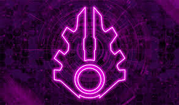

Covenant
The Covenant is a powerful alien alliance featured in the Halo universe. They are known for their religious zealotry and advanced technology.
Key Details
- Founded by the Prophets (San’Shyuum) and the Elites (Sangheili)
- Believes in the "Great Journey" and worships the Forerunners
- Enemy of the UNSC during the Human-Covenant War
- Known for powerful plasma-based weapons and spacecraft
Member Species
- Sangheili (Elites)
- Unggoy (Grunts)
- Kig-Yar (Jackals)
- Lekgolo (Hunters)
- San’Shyuum (Prophets)
Did You Know?
The Covenant originally revered the Forerunners as gods, but their religion was based on a critical misinterpretation of Forerunner technology.